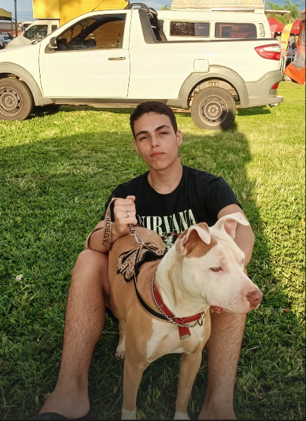

Meu nome é Miguel Angelo de Andrade, e sou aluno do curso de Tecnologia em Análise e Desenvolvimento de Sistemas no IFSP - Campus Hortolândia. Tenho 18 anos e sou apaixonado por jogos, filmes e arte no geral. Sou técnico em Desenvolvimento de Sistemas, pela ETEC. Esta página é uma apresentação breve sobre mim, meus gostos pessoais, e sobre o curso no geral. Espero que goste!
